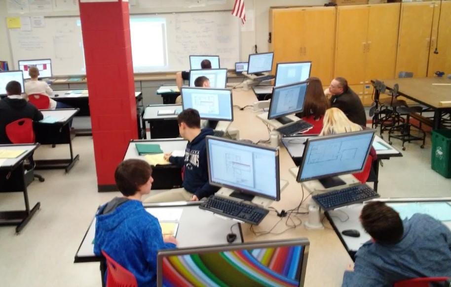
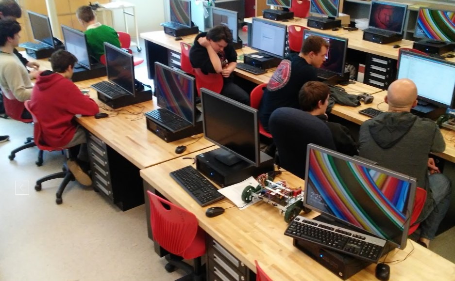

Technology Career
Boyertown Area Senior High School offers a plethora of classes and extracurricular activities which promote STEM involvement and technology education. Read below to learn more.
Introductory Course:
1540: Technological SystemsIn this course, student study four general areas of technology and engineering (communications, materials, design, and engineering) using a problem-solving type of advancement. Students also learn to analyze, identify, and use technologies suited for everyday life. This class is an excellent way to design and engineer solutions to problems, prototype ideas, and express creativity.
Intermediate Courses
1572: Photographic ImagingThis is an engaging course where students learn the fundamentals of photography using the state of the art DSLR camera. Some of the assignments in this class include stop action, depth of field, along with macro and portrait photography. Students will learn to capture sensational photos, edit and print images quickly, and develop quality layouts. Also, students will be taught how to use Adobe Photoshop and Lightroom in the digital photo lab.
1541: Digital Communications
Digital Communications will help students take a look at how graphics found on everyday objects are made. Students will spend time learning how to put designs on T-shirts, create vinyl graphics and decals for cars and windows, design album covers, and create websites with streaming audio and video. This class also provides instruction on creating graphics, logos, and images that can be edited and used both in print and on the internet. The promotion of businesses, groups, and organizations can be communicated through the knowledge gained in this class.
1559: Residential Design and Modeling
This semester-long class teaches students basic skills to design a remodeling project for a house using Chief Architect. Chief Architect is a 3D design program that students will use to remodel a kitchen, design a deck, develop an interior color scheme, plan for a recreational room, and many more. Student will learn many vital skills needed in order to complete more advanced classes during the course of a semester.
1552: Architectural Design
This course allows students to use a 3D architectural design program, Chief Architect, to solve auxiliary drawing). There will be a big emphasis on problem solving, and learning accuracy, problems related to architecture. Students will develop a general knowledge of interior and exterior design. Also, students will be provided the opportunity to explore architectural concepts including land development, environmental design factors, residential and commercial area planning, and landscape design. This class is a must for students who plan to become an architect, designer, or engineer.
1542: Technical Drawing and Design
This course will focus on the methods, materials, instruments, and techniques of technical drawing. During this class students will work through a progression of technical sketching and board drawing to SolidWorks, 3D printers, and a working drawing (Three-view, section, and pride, efficiency, and productivity.
 1544: Materials Engineering
Materials Engineering is a class centered on making things and creating an understanding of the qualities and characteristics of the materials being utilized. Wood, metal, plastics, glass, and composites are used to produce a variety of items throughout the course. Molding, casting, bending, making precise cuts, turning, welding, and applying finishes are all processes that will be learned during this class. Students will work independently as well as cooperatively with other students. If a student is contemplating a career as a material engineer, manufacturing technician, plant manager, or any related technical professions, this class would be an excellent choice.
1545: Residential Construction
This course is centered around the building of houses and other structures, along with the processes and trades needed to complete these projects. Various experiences will be provided to familiarize students with carpentry, electrical wiring, plumbing, cabinetmaking, and more. This class also brings teamwork into the picture, which is necessary in order to bring the skills learned into the real world. Residential Construction is a great choice for students who plan to pursue a path as a carpenter, construction project manager, builder, architect, electrician, civil, engineer, or plumber.
1547: Technology & Engineering
This class is an introduction to concepts related to problem solving and engineering. Throughout the year students will experience a variety of challenging activities relating to applied engineering, structural engineering, mechanical engineering, civil engineering and transportation, electrical and computer engineering, and robotics. Most of these activities will be executed with a other classmates, but some are projects that will be produced alone.
1671: Telecommunications: Studio Production (Meet 3 Times a Cycle)
Telecommunications: Studio Production is a course that will meet 3 times per cycle. This class is an introduction to multi-camera studio television production. Students will experience hands-on training in camera, sound, lighting, graphics, directing, recording, editing, script writing, and on-air talent, paired with basic communication theory and concepts of mass media and society. Throughout this course students will work with all equipment and jobs of studio television production and produce a variety of programs such as talk shows, new programs, etc.
1681: Telecommunications: Field Production & Editing (Meet 6 Times a Cycle)
This class provides students knowledge on single-camera field production, shot composition, and capturing sound. Students are also given the fundamental information of non-linear editing using Adobe Premiere and Prelude. These skills will help students in the planning and production of single-camera field productions including short films, advertisements, and music videos. This course is counted as a computer credit.
Advanced Courses
1567: Advanced Multimedia TechnologyAdvanced multimedia technology will bring a students communications skills to the next level. This course builds on former knowledge from introduction classes and allows a student to push those said skills to the limit while working with industry standard equipment. Topics that will be discussed during this course will include audio/video hardware and software, green screen techniques, high-end photography and digital cameras, desktop publishing, imaging software, graphic layout, and printing technologies. This course is built around having small groups of students working together to develop and produce a business marketing plan, incorporating concepts learned while competing amongst other students.
Prerequisites: Photographic Imaging (1572) or Digital Communications (1541) or Telecom (1671)
 1555: Advanced Robotics & Automation
Advanced Robotics & Automation is an excellent class for students interested in robots and automated systems. In this class, students will incorporate STEM (Science, Technology, Engineering, and Math) into learning how to design, build, program, control, and test numerous robotic devices. Classwork will involve work in mechanics, energy analog/digital electronics, forces, motors, prototyping, and programming. Students will learn about the Engineering Design Process and follow it as they document work and solve problems.
Prerequisite: 1544 or 1547
1557: Advanced Technology & Engineering
This course is only available to students who have previously completed Technology and Engineering (1547). Advanced Technology and Engineering is building off of knowledge learned in a students first year, taking Technology and Engineering (1547). Activities in this course are more complex and require large blocks of time. Projects are also build off of the concepts of communication, transportation, construction, and manufacturing and may include electronics and programming microcontrollers, robotics, product design and development, engineering design, and modular construction.
Prerequisite : Technology and Engineering (1547)
1551: Advanced Engineering Design
Advanced Engineering Design will use the basic skills learned in Technical Drawing and Design (1542) to create solutions to complicated engineering problems. This course will emphasize the engineering method, a process for developing designs, which will be used to create working prototypes. Some of the various activities are 3D printing, creating clay automobiles, using a wind tunnel, and designing a project that fits the human body.
Prerequisite: Technical Drawing and Design (1542)
1553: Advanced Materials Engineering
This class is for students who want to further their education in manufacturing. The opportunity to design and build more complex objects and dig deeper into the creation of these products will be offered in this course. Students will also explore cutting edge technologies such as CNC and 3D printing honing in on a students skills as a maker.
Capstone/Research and Development Courses
1561: Technology Research and Development: DesignTechnology Research and Development: Design is an independent study course for students who have successfully completed advanced technology education classes. This class provides students with the opportunity to focus on one specific area of study. Students are expected to follow the technological method, which includes defining the problem, conducting research,developing a plan, creating a model or prototype, testing and designing, and presenting information. Students will also need to maintain field notes, submit a proposal, and create a final report
Prerequisite: Architectural Design (1552) or Engineering Design (1551) or Advanced Technology & Engineering (1557), and Instructor Approval required
1562: Technology Research and Development: Materials
This class is designed for students to take a project from an initial concept and design and build it into a fabricated and finished product. End results should be an item worthy for inclusion in a portfolio and the skills developed should become a big asset to students as they prepare their future plans.
1568: Technology Research and Development: Engineering
Students who have a strong interest in engineering and problem solving will highly enjoy this course, and will have the chance to develop their own ideas in areas such as robotics, electronics, mechanics, and product design. The possibility for projects created in this class are only limited to the scope of a students imagination. Those headed into the technical field such as engineering should apply for those class.
Prerequisite: Engineering Design (1551) or Advanced Technology and Engineering (1557)
1564: Technology Research and Development: Communications
Students can take their interest in the communications field one step further in Technology Research and Development: Communications. This course will use the concepts from previous classes a building blocks in order to develop students’ interests in this field. Students will be allowed to choose an area of study and learn more about their topic. Assignments may include taking photos of school events, developing and retouching photos, combining photos and graphics into advertisements, and producing professional quality video and audio clips.
1691: Telecommunications: Advanced Production (Meet 6 Times a Cycle)
This advanced applied program of study in studio television and field production includes work in program development, videography, lighting, audio production, and special effects editing. Students will work independently as well as in small groups in the TV studio. Students will produce original videos and work with district faculty to create programs and complete video assignments for BASH-TV and BASD-TV, Boyertown School District’s cable access channel. This course will count as a computer credit.
Prerequisite: Studio Production or Field Production and Editing and a teacher recommendation
Specialty Courses:
1576: Adaptive Technology EducationThis class is restricted to students enrolled in life skills and or learning support programs only. In and adapted format, this class will presents technological concepts and skills to students in way appropriate to the students abilities. Activities will involve concepts such as transportation, communication, construction, and manufacturing areas.
1581: Independent Study- Tech Ed
Students will act by the Independent Study requirements outlined to all students: Index, syllabus, weekly journal, weekly self evaluations, two reflective pieces, completed and graded assignments, evidence of work, major project w/rubric, and final reflection writing. This course is designed to allow students to take an area of interest and pursue a major project in that area. In order to meet the needs of this study, students may schedule class time with an instructor.
Prerequisites: Teacher recommendation and Department leader approval